Hi, I'm
Ritabrata
Chakraborty
Data Analyst Data Scientist NLP Researcher
M.Sc. Physics (Solid State) → Data & AI Research. I bridge rigorous scientific thinking with modern machine learning to extract meaning from complex datasets. Published researcher at COLING 2025, affiliated with IIT Kharagpur.


About Me
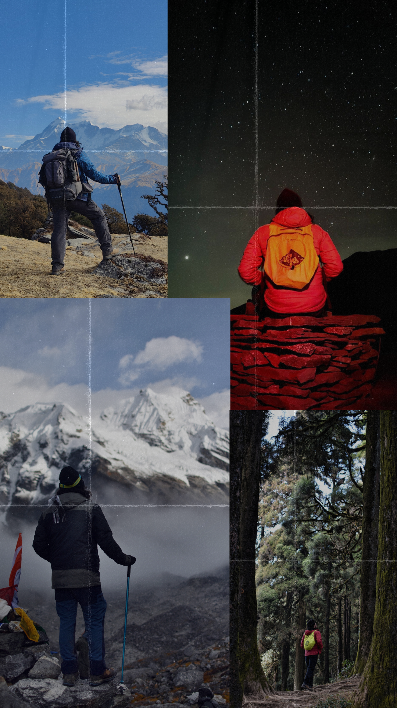
Physicist → Data Scientist
I hold a B.Sc. in Physics from Vidyasagar College (Calcutta University) and an M.Sc. in Physics with Specialization in Solid State Physics from Osmania University, Hyderabad, graduating with an 8.56 CGPA with Distinction. The analytical discipline of physics — breaking complex systems into first-principle components — shapes how I approach every data problem.
My toolkit spans Python-based ML/DL pipelines
(scikit-learn, TensorFlow,
pandas, numpy), structured data analytics
(SQL, Tableau, Power BI, Excel), and Natural Language Processing,
including cross-lingual transfer and Vision-Language Models.
At IIT Kharagpur, I implemented the core codebase and ran automatic and human judgment-based evaluations for a cross-lingual NLP framework that improved Hindi Wikipedia article quality by up to 65% — work published at COLING 2025. I am currently continuing this collaboration with research on Bias Removal in Vision-Language Models.
Outside of data, I enjoy hiking & trekking paired with photography, and both playing and watching football.
Technical Skills
Languages & Tools
Data & Analytics
Machine Learning & AI
Research
On the Effective Transfer of Knowledge from English to Hindi Wikipedia
Implemented the core codebase and conducted automatic and human judgment-based evaluations for a lightweight framework that bridges content gaps between English and Hindi Wikipedia — using in-context learning with LLMs and machine translation to enhance Hindi article quality by up to 65%. Conducted under Prof. Animesh Mukherjee during a research internship at IIT Kharagpur (July 2024 – January 2025).
Read PaperBias Removal in Vision-Language Models (VLMs)
Active research exploring bias detection and mitigation strategies in multimodal Vision-Language Models, continuing the IIT Kharagpur research collaboration.
Certifications
Specializations
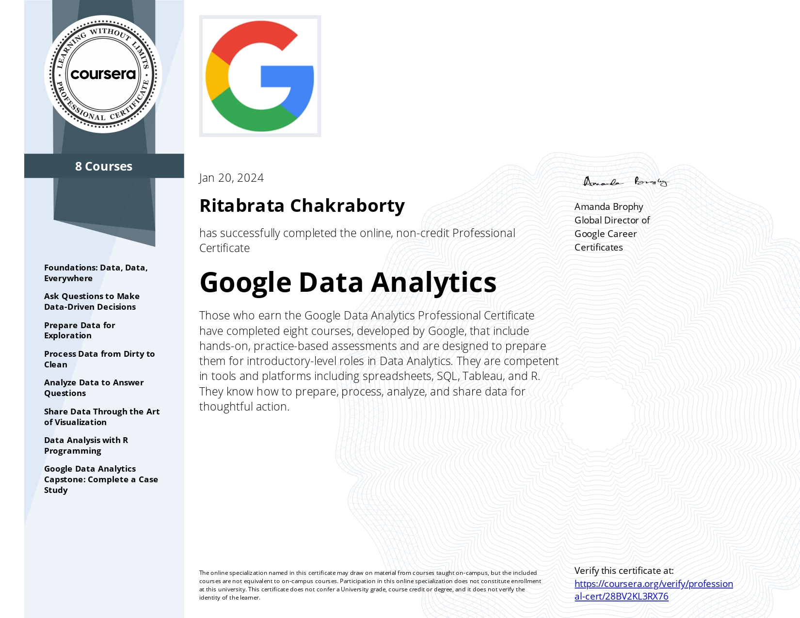
Google Data Analytics Professional
Google / Coursera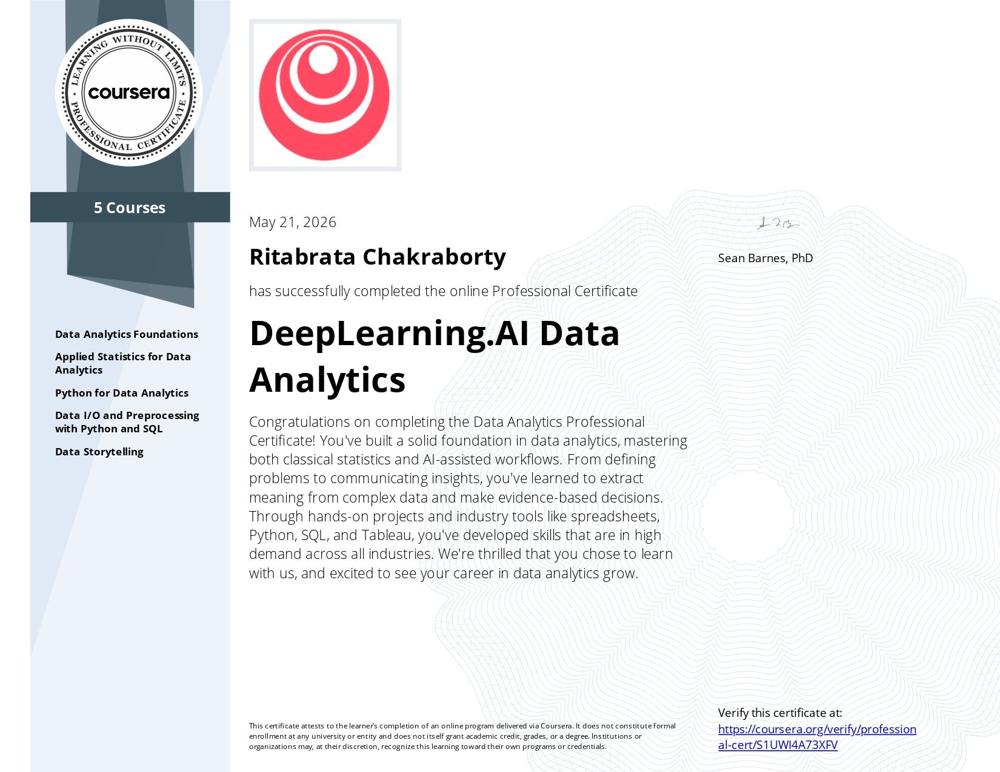
DeepLearning.AI Data Analytics
DeepLearning.AI / Coursera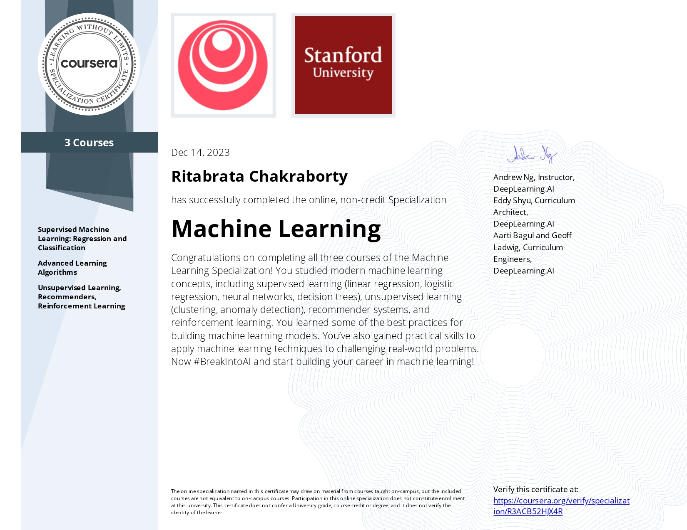
Machine Learning Specialization
DeepLearning.AI / Coursera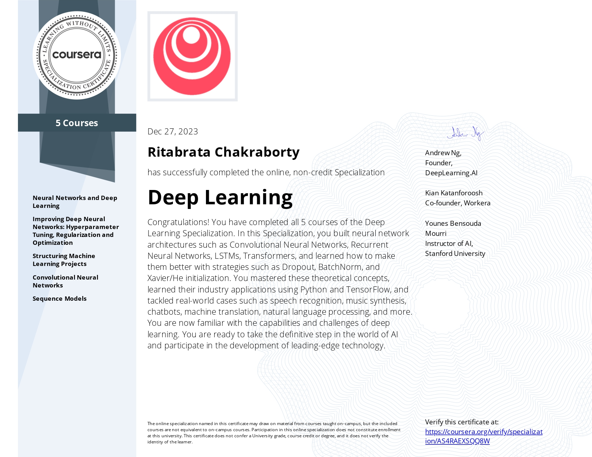
Deep Learning Specialization
DeepLearning.AI / Coursera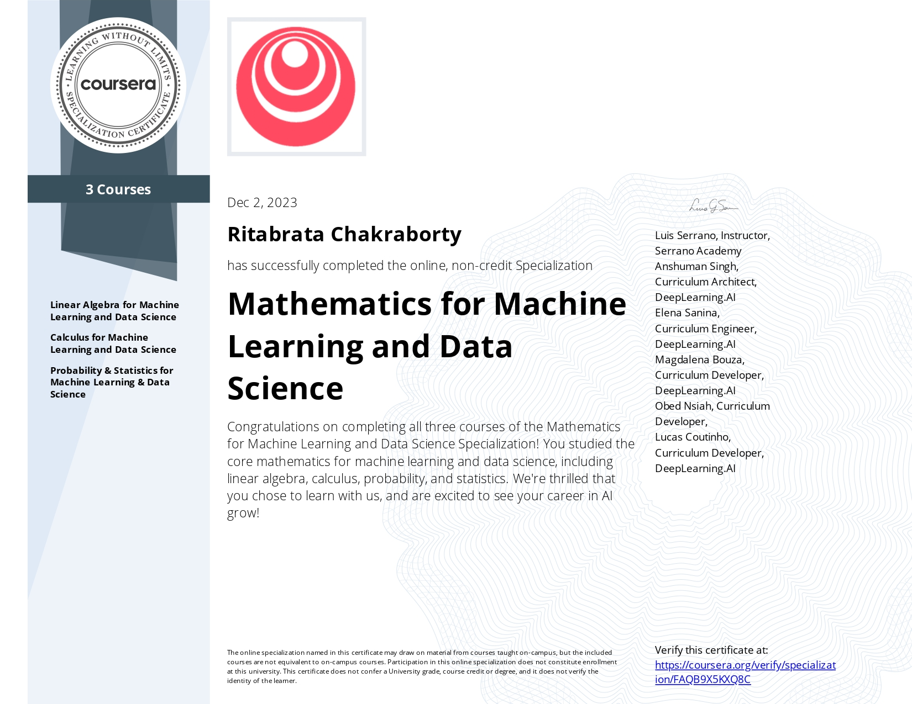
Mathematics for ML & Data Science
DeepLearning.AI / CourseraIndividual Courses
Programming for Everybody (Python)
University of MichiganPython Data Structures
University of MichiganUsing Python to Access Web Data
University of MichiganUsing Databases with Python
University of Michigan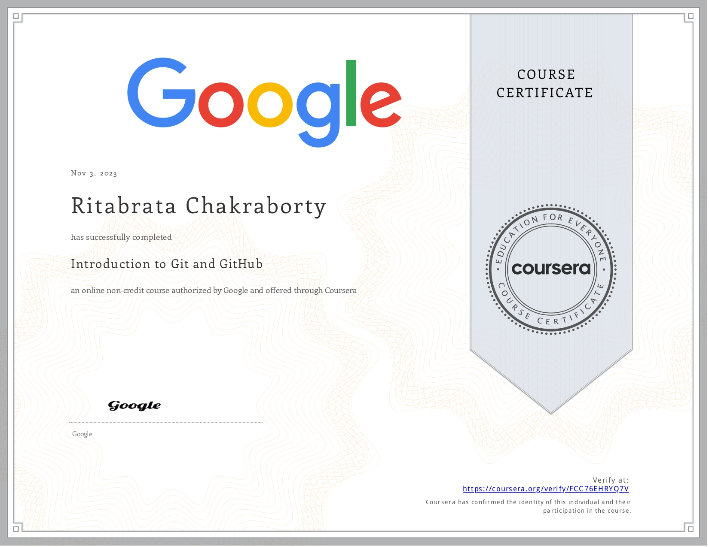
Introduction to Git & GitHub
Google / Coursera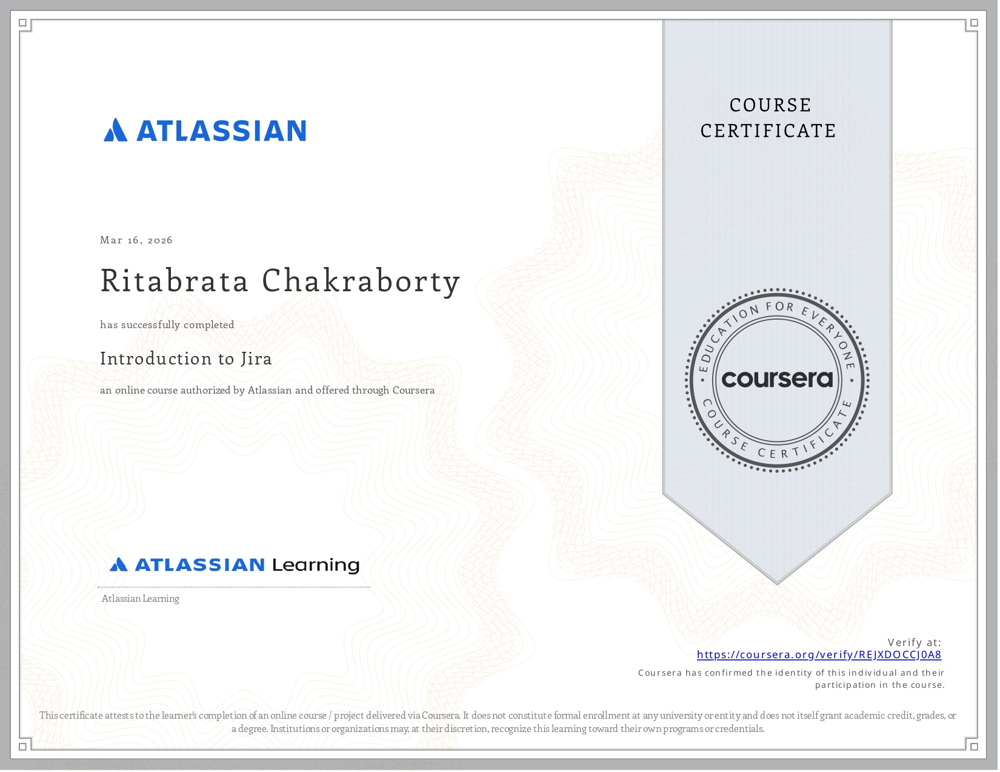
Introduction to Jira
Atlassian / Coursera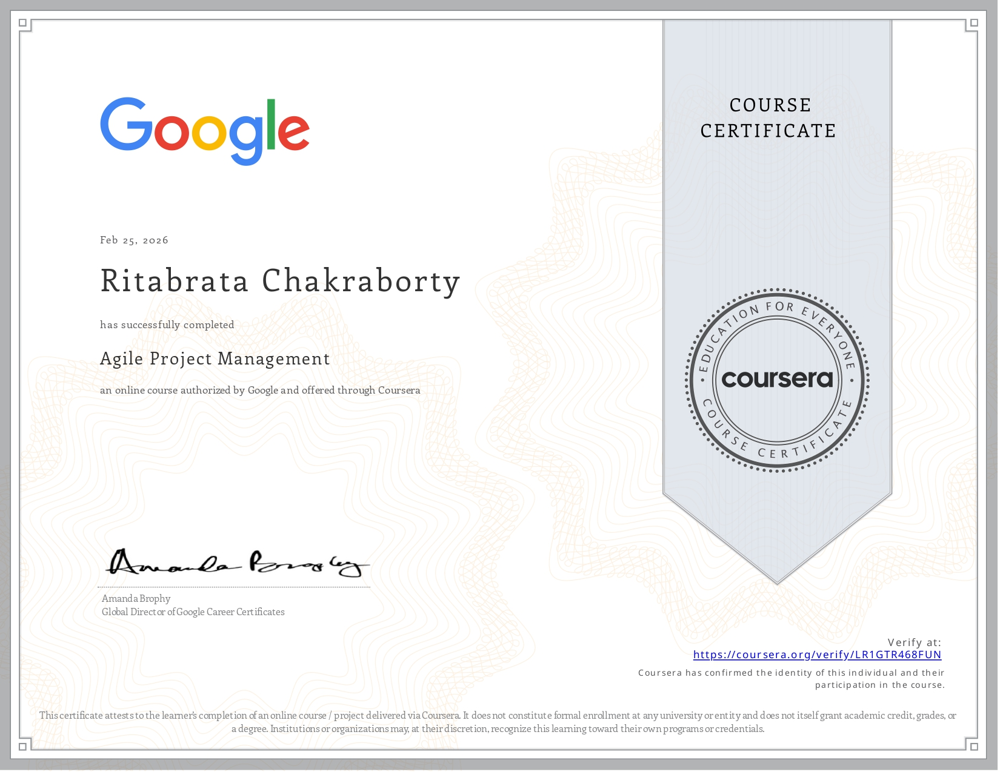
Agile Project Management
Google / CourseraPower BI — Data Analytics
Microsoft / Coursera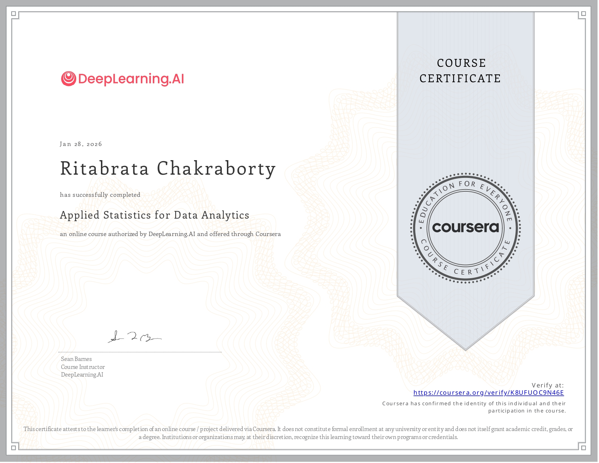
Applied Statistics for Data Analytics
DeepLearning.AI / Coursera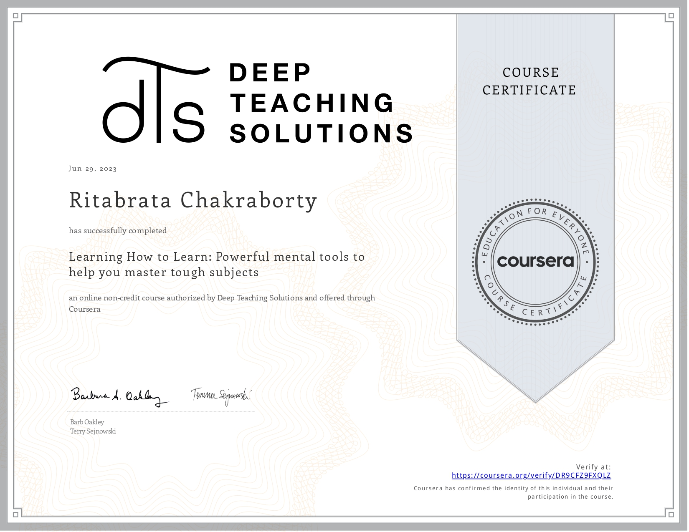
Learning How to Learn
Coursera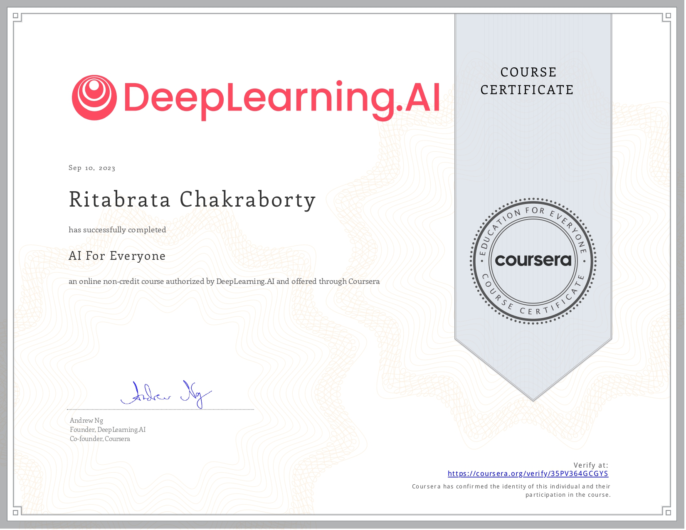
AI for Everyone
DeepLearning.AI / CourseraGet In Touch
Open to opportunities in Data Science, ML Engineering, and Data Analytics. Let's build something meaningful together.
-
Phone +91 7980613785
-
Email ritabratac1997@gmail.com
-
Alt. Email ritochak7@gmail.com